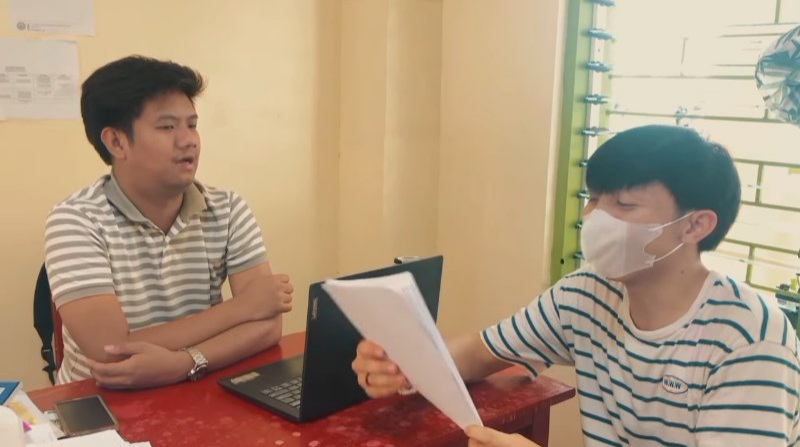
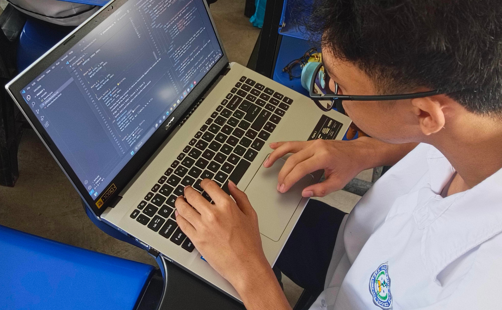
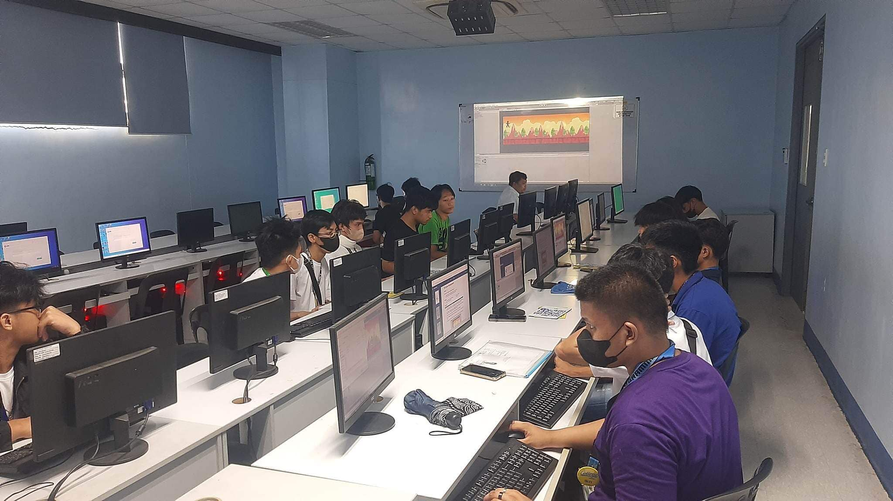
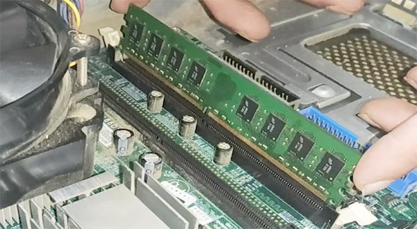
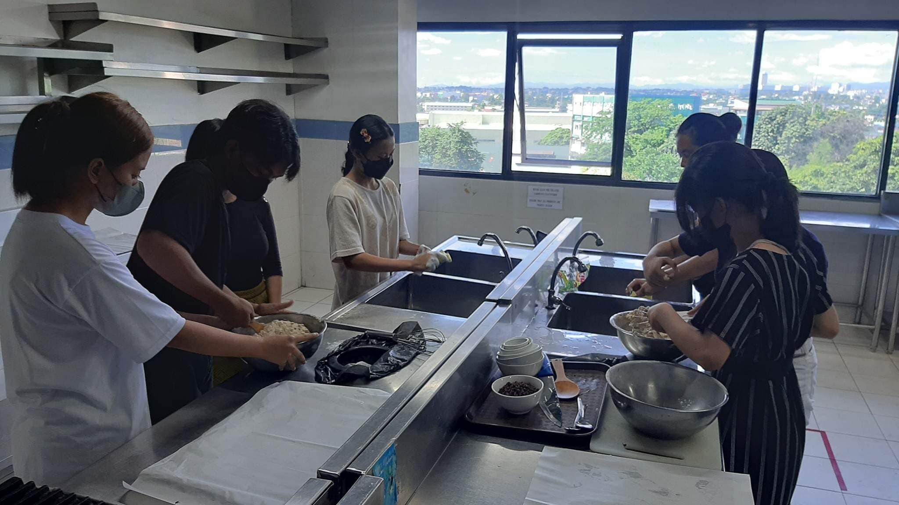
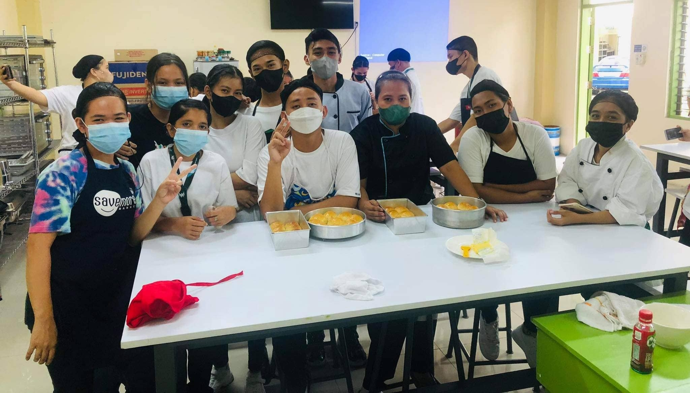

The HUMSS strand focuses on subjects related to human behavior, culture, politics, and social issues. It prepares students for careers in the social sciences, education, and community services.

The ABM strand is tailored for students interested in careers in business, finance, and entrepreneurship. It covers accounting, business principles, economics, and management skills essential for future business leaders.
The ICT Programming strand focuses on coding and software development. Students learn various programming languages and skills for building applications, websites, and software solutions.
This strand introduces students to digital animation, including 2D and 3D graphics, visual effects, and character design. It's ideal for students interested in creative roles within media and digital arts.
ICT CSS focuses on computer hardware and software maintenance. Students gain skills in troubleshooting, assembling, and repairing computers, as well as setting up networks and maintaining IT security.
The Cookery strand provides students with skills in food preparation, meal planning, and kitchen management. Students learn various cooking techniques, food safety, and how to create culinary dishes.
This strand focuses on baking and pastry-making, including bread-making, cake decoration, and dessert preparation. Students learn techniques.
